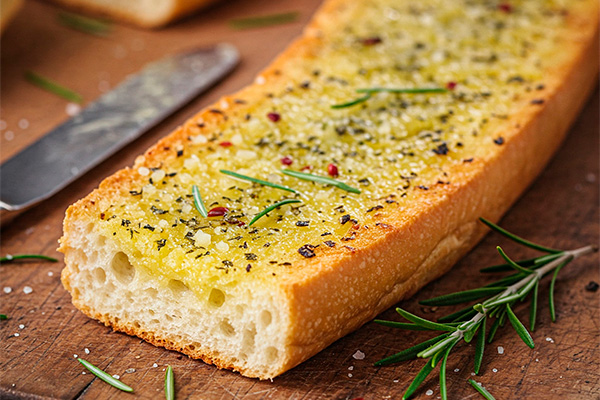

O Melhor Pão de Alho Caseiro

Esqueça os pães de alho comprados! Esta receita caseira é incrivelmente cremosa, saborosa e muito fácil de fazer. É o acompanhamento perfeito que não pode faltar no seu churrasco e vai fazer sucesso absoluto.
Ingredientes
- 4 a 6 pães franceses (ou baguete pequena) amanhecidos (do dia anterior é ideal)
- 1 pote (200g) de maionese de boa qualidade
- 1/2 xícara (aprox. 100g) de manteiga sem sal em temperatura ambiente (ou margarina de boa qualidade)
- 3 a 5 dentes de alho grandes bem picados ou amassados (ajuste a gosto)
- 1/2 xícara de queijo parmesão ralado fino
- 1/4 xícara de queijo muçarela ralado (opcional, para mais cremosidade)
- 2 colheres de sopa de cheiro-verde picado (salsinha e cebolinha)
- Sal a gosto (cuidado, o parmesão já é salgado)
- Pimenta do reino moída na hora a gosto
- Opcional: Orégano seco, uma pitada de noz-moscada
Você vai precisar:
- Tigela
- Faca de serra para pão
- Churrasqueira ou forno
Modo de Preparo
- Preparar a Pasta de Alho: Em uma tigela, misture bem a maionese, a manteiga em temperatura ambiente, o alho picado/amassado, o queijo parmesão ralado, a muçarela ralada (se usar), o cheiro-verde picado, sal (com moderação), pimenta do reino e os opcionais (orégano, noz-moscada). A mistura deve ficar homogênea e cremosa. Prove e ajuste o sal e o alho se necessário.
- Cortar o Pão: Corte os pães franceses em fatias grossas (cerca de 1.5 a 2cm), mas sem separar as fatias completamente na base. Deixe a base do pão unida para que ele abra como uma sanfona. Se usar baguete, pode cortar em fatias individuais ou no estilo sanfona também.
- Rechear o Pão: Com cuidado, espalhe generosamente a pasta de alho entre cada fatia do pão. Passe também um pouco da pasta por cima do pão.
- Assar na Churrasqueira: Leve os pães recheados à churrasqueira em fogo médio/baixo (calor indireto ou grelha mais alta). Asse por cerca de 10 a 15 minutos, virando ocasionalmente com cuidado, até o pão ficar dourado e crocante por fora e o recheio derretido e borbulhante. Fique atento para não queimar!
- Assar no Forno (Alternativa): Pré-aqueça o forno a 180°C. Coloque os pães recheados em uma assadeira e leve ao forno por cerca de 15 a 20 minutos, ou até dourarem e o queijo derreter. Se quiser mais crocante, pode usar a função grill nos últimos minutos.
- Servir: Retire da churrasqueira ou forno e sirva imediatamente, enquanto está quente e cremoso.
Dicas do Churrasqueiro
- Use pão amanhecido, ele absorve melhor a pasta e fica mais crocante.
- A qualidade da maionese e da manteiga influencia muito no sabor final.
- Não economize no recheio! Passe bem entre as fatias.
- Se gostar de um toque picante, adicione pimenta calabresa moída à pasta.
- Pode preparar a pasta com antecedência e guardar na geladeira por até 2 dias.
Junte-se à Comunidade ChurrascoMania!
Siga-nos nas redes sociais e participe das discussões.